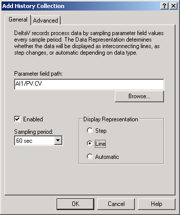

-
Select the AI block in the
Diagram view.
-
In the
Parameter View list, right-click
PV and select
Add History Recorder.
The
Add History Collection dialog opens.

-
The path to the current value for PV (AI1/PV.CV) appears in the
Parameter field path box. (If this path does not appear here, click the Browse
button and browse for it.)
-
Click
Enabled.
-
For Display Representation, select
Line.
Note:
You can change the line style later using the
Process History View application.
-
Use the default value of 60 seconds as the sampling period.
-
Click
OK.
Later, we will assign the area (TANK-101) to the Continuous Historian
subsystem, enable history collection on the workstation, and download the
workstation in order to collect and view the historical data for the field
values.